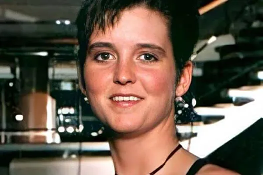
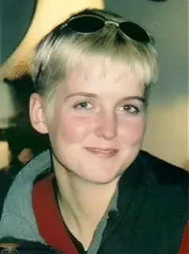

Биография


Эми Линн Брэдли (родилась 12 мая 1974 года) — американка, пропавшая без вести во время круиза по Карибскому морю на международном круизном лайнере Royal Caribbean Rhapsody of the Seas в конце марта 1998 года по пути на Кюрасао.
На момент исчезновения девушке было 23 года. Власти начали предполагать, что она, возможно, упала за борт и утонула или покончила с собой.
За годы, прошедшие с момента исчезновения, было несколько заявлений о том, что Брэдли видели на Кюрасао, Барбадосе и в Сан-Франциско. Хотя следователи не смогли подтвердить ни одно из этих наблюдений, они подогрели слухи о том, что Брэдли стал жертвой нечестной игры или торговли людьми.
24 марта 2010 года Эми Линн Брэдли была официально объявлена умершей, через двенадцать лет после исчезновения без свидетелей и без найденного тела.
Хронология
Подозреваемые
Сети торговли
Карибские острова — центр нелегальной торговли людьми в 1990-х. Эми могли похитить в порту.
Члены экипажа
Возможно, кто-то помог проникнуть в каюту или вывести её с корабля без срабатывания систем.
Местные преступные группировки
Фото из Венесуэлы и Колумбии (2005–2012) показывают женщину, похожую на Эми, в окружении бандитов.
Ваши теории и версии
Контактная информация
ФБР (США): Case #1998-0324
Семья Брэдли: amybradleycase.org (официальный сайт семьи)
Не теряйте надежду. Иногда правда скрывается в деталях.